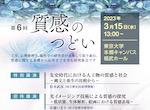
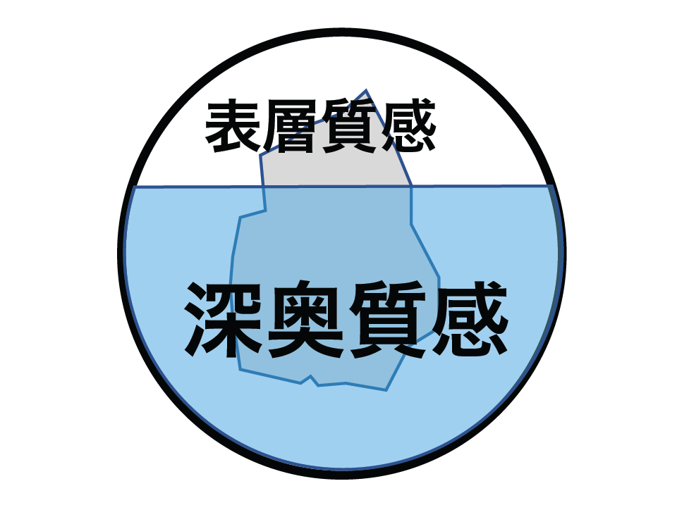
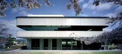

2023年3月15日（水）に東京大学本郷キャンパス 福武ホールにて、「質感のつどい」第６回公開フォーラムが開催されます。
プログラム等、公開フォーラムの詳細はこちらのページをご覧ください。
文部科学省科学研究費補助金 学術変革領域研究（A） 「実世界の奥深い質感情報の分析と生成」の活動を広報するホームページが完成しました。ぜひご覧ください。


学術変革領域研究（Ａ）「実世界の奥深い質感情報の分析と生成」（深奥質感）
研究領域のキックオフシンポジウムを開催いたします。
2021年1月28日 (木) 13:30〜15:30 (オンライン開催)
詳細の情報は、こちらを御覧ください。
R02年度 学術変革領域研究（Ａ）「実世界の奥深い質感情報の分析と生成」に採択されました。
ホームページを作成しましたので、ご覧ください。

2019年12月4日（水）に京都大学医学部創立百周年記念施設 芝蘭会館にて、「質感のつどい」第５回公開フォーラムが開催されます。なお、引き続き12月5〜6日には、新学術領域研究「多元質感知」国際シンポジウムが同会場で開催されます。
プログラム等、公開フォーラムの詳細はこちらのページをご覧ください。
2018年10月10日（水）に東京工業大学（すずかけ台キャンパス）すずかけホールにて、「質感のつどい」第４回公開フォーラムが開催されます。
プログラム等、公開フォーラムの詳細はこちらのページをご覧ください。
2017年11月22日に大阪大学（吹田キャンパス）銀杏会館にて「質感のつどい」公開フォーラムが開催されます。
プログラム等、公開フォーラムの詳細はこちらのページをご覧ください。
2016年11月30日に千葉大学西千葉キャンパスにて「質感のつどい」公開フォーラムが開催されます。ご参加予定の皆さま、当日はどうぞよろしくお願いいたします。
プログラム等の公開フォーラムの詳細はこちらのページをご覧ください。また公開フォーラムのポスターはこちら（約2.3MB）です。
下記の通り、質感関連のイベントが開催されますので、ご案内いたします。
-----------------------------
第６回CSJ化学フェスタ2016におけるテーマ企画のひとつとして、「五感でとらえる新しい物理化学〜質感研究の最前線〜」を11月14日（月）午後に開催します。質感のつどいメンバーである、西田眞也氏、岡本正吾氏、五十嵐崇訓氏が登壇します。詳細は、本案内末尾のPDFチラシを参照して下さい。ぜひ多くの皆さまにご参加いただければと思います。
- 日本化学会秋季事業 第６回CSJ化学フェスタ2016
- 主催者：公益社団法人 日本化学会
- 日時、場所：2016年11月14日（月）〜16日（水）、タワーホール船堀
- 参加資格、参加費など：日本化学会正会員（事前登録14000円／当日登録16000円）
非会員（事前登録24000円／当日登録26000円）
学生会員（事前登録3000円／当日登録4000円）
非会員学生（事前登録4000円／当日登録5000円）
＊いずれもプログラム集が参加費に含まれます。
＊事前申込期間 8月1日〜10月5日（参加費のお支払い期限：10月7日） - URL；https://www.csj.jp/festa/2016/index.html
- 問い合わせ先：公益社団法人日本化学会 企画部
Mail：festa@chemistry.or.jp / Tel 03-3292-6163
日本基礎心理学会の発行する「基礎心理学研究」では，「質感と感性の認知科学」と題する特集号への論文を募集します．質感や感性にまつわる多彩な研究報告を広く受けつけ，迅速に審査する予定です．締切は2016年11月末日(暫定)です．皆様ふるってご投稿ください．
会場：アクトシティ浜松（静岡県浜松市）
日程：2016年8月1日(月)～4日(木)
"You may not have heard of Michiyo Yasuda, but you know her work." という気になるタイトルの記事がBBC newsbeatで先月12日（2016年10月12日）に大きく報じられました。
https://www.bbc.co.uk/newsbeat/article/37629894
保田さんが10月5日に亡くなったことを伝えると共に、彼女の仕事を偲ぶ内容でした。保田道世さんはスタジオジブリが生み出した数多くの名作の色彩設計を手掛けてきた女性です。BBC以外にも世界をこのニュースが駆け巡っています。kotaku.comでは、保田さんが手がけたさまざまな「色」の世界を見ることができます。
https://kotaku.com/studio-ghibli-color-designer-michiyo-yasuda-has-died-1787696219
保田さんについて書かれた「アニメーションの色職人」（徳間書店）を読むと、色彩設計という作業の目的が、実は質感の表現であったことが分かります。世界のさまざまな物が持つ質感を、画面を通していかに見る人に伝えるか、に取り組まれた保田さん。質感の理解を通して豊かな世界の根源に迫ろうと試みている研究者の仕事と、深いところでつながっていることを感じます。
(HK 2016-11-9)
マウスではUVに感度の高い錐体と、緑光に感度の高い錐体の２種類と、桿体の３種類の光受容細胞が存在しますが、このうち桿体とUV錐体の相互作用によって反対色応答（波長によって極性が変化する応答）が生み出されているようです。著者らは同じメカニズムがヒトの薄明視で起きる色知覚の変化（プルキンエシフト）の仕組みにも関係することを考察しています。（HK 2016-5-23）
Joesch M and Meister M. A neuronal circuit for colour vision based on rod-cone opponency. Nature. 2016 Apr 14;532(7598):236-9. doi: 10.1038/nature17158. Epub 2016 Apr 6.
ドイツのダルムシュタットにあるFraunhofer研究所は3Dプリンティングに特化した研究所です。そこでは、3Dプリンタそのものの開発の他に、質感再現 (appearance reproduction) についても精力的に研究しています。現在の最大の関心事は表面下散乱に関連する複雑な見えの再現で、次世代あるいはその次の世代の3Dプリンタにこの研究成果が搭載される可能性があります。(SN)
これも照明の推定の個人差を表すのかも知れません。(HK)
オリジナルの青黒－白金ドレス問題についてはいくつか論文が出ています。例えば
Gegenfurtner KR, Bloj M, Toscani M. The many colours of 'the dress'.
Curr Biol. 2015 Jun 29;25(13):R543-4. doi: 10.1016/j.cub.2015.04.043. Epub 2015 May 14.
Lafer-Sousa R, Hermann KL, Conway BR. Striking individual differences in color perception uncovered by 'the dress' photograph.
Curr Biol. 2015 Jun 29;25(13):R545-6. doi: 10.1016/j.cub.2015.04.053. Epub 2015 May 14.
など。